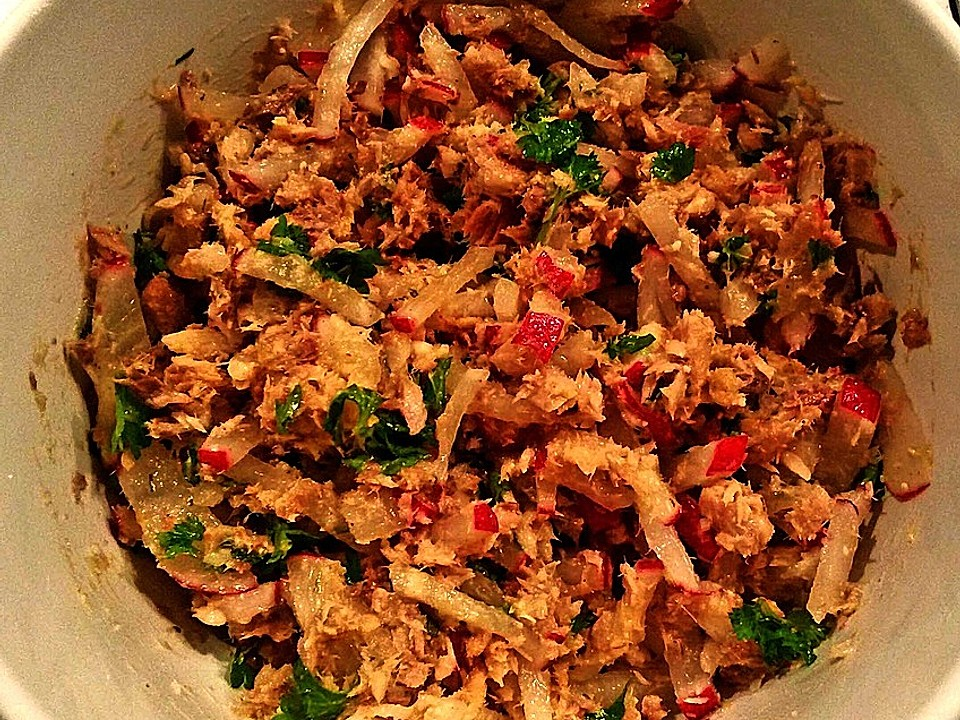

Sardines salad

Description
Sardine salad with tomato and cucumber.
Ingredients
- 2 Oil-sardines cans
- 1 Tomato
- Half a cucumber
- Olive oil
- Vinegar
- Salt & Pepper
- 1 lemon
Steps
- Cut tomato and cucumber in small pieces and put in bowl
- Add the sardines to the bowl
- Added oil, vinegar, salt and pepper
- Mix everything